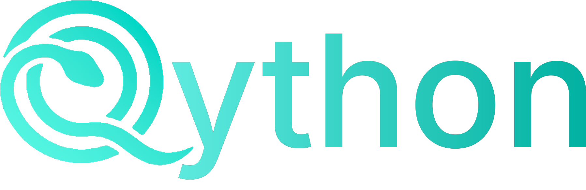

Copiloto clínico com embasamento por evidência, biblioteca médica com busca semântica, gerador de materiais de estudo e simulados. Para médicos e estudantes de medicina.
O Qython era um SaaS por assinatura. Em setembro de 2026 o código foi aberto sob Apache-2.0 e o serviço hospedado foi desligado. Agora você roda por conta própria: seus dados na sua infraestrutura, suas chaves de API, sem mensalidade e sem intermediário.
# clone, configure a chave da IA e suba a stack git clone https://github.com/leonardomojoli/qython.git cd qython cp .env.example .env # preencha GEMINI_API_KEY e JWT_SECRET_KEY docker compose up -d
Sobe em localhost:8080. As migrations rodam sozinhas no primeiro boot.
Chat com embasamento por busca, citações inline numeradas e hierarquia de evidência — meta-análise e diretriz pesam mais que relato de caso; artigo retratado é penalizado.
Ingestão de PDF, áudio e vídeo com OCR e transcrição. Busca híbrida: embeddings multilíngues, BM25 e reranking por cross-encoder.
Resumos, mapas mentais, flashcards, podcasts e videoaulas gerados a partir da sua própria biblioteca.
Simulados com memória anti-repetição, provas de concurso customizadas, ranking e gamificação.
Anamnese guiada por especialidade — 33 delas —, evolução clínica e prescrição com orientações ao paciente.
React Native para Android e iOS, com modo offline e sincronização incremental com o backend.